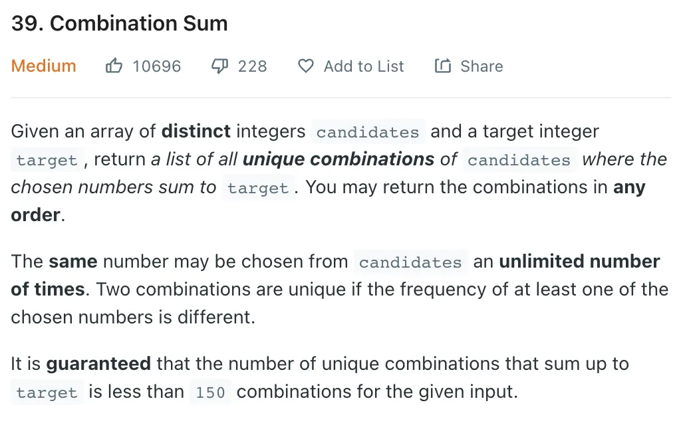
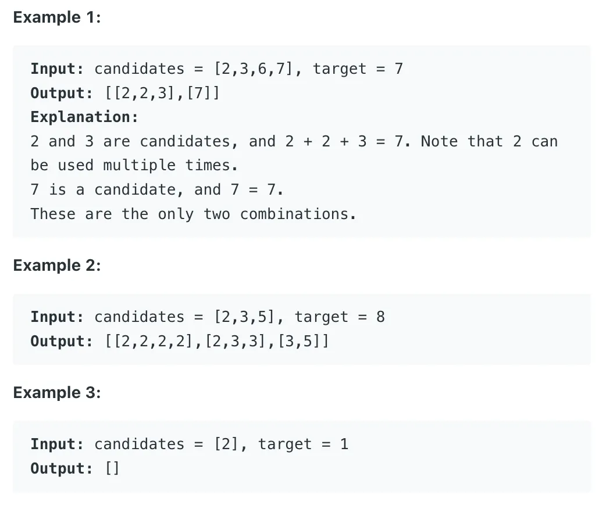
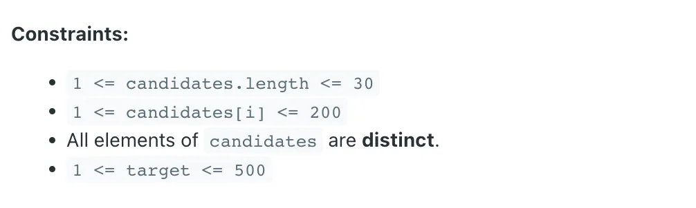

39. Combination Sum
考過的公司：Amazon、Bytedance
Question



✍🏽 My Solution -DFS剪枝
Runtime: 3 ms, faster than 91.05% of Java online submissions for Combination Sum. Memory Usage: 44.6 MB, less than 57.78% of Java online submissions for Combination Sum.
class Solution {
List<List<Integer>> res = new ArrayList<>();
public List<List<Integer>> combinationSum(int[] num, int target) {
List<Integer> path = new ArrayList<>(); // 创建一个回溯容器，存放路径元素
Arrays.sort(num);
dfs(num, 0, path, 0, target);
return res;
}
private void dfs(int[] num, int begin, List<Integer> path, int sum, int target){
// 终止条件
if (sum == target) {
res.add(new ArrayList<Integer>(path));
return;
}
for (int i = begin; i < num.length; i++) { //从 begin 开始，使用当前元素及比当前元素大的（使用排序的作用在于此）
// if(i > begin && num[i] == num[i-1]) continue; // if the set doesn't contains duplicates, then this line won't be needed.
if(num[i] + sum > target) break;
path.add(num[i]);
dfs(num, i, path, sum + num[i], target); // 基于此，继续选择，传i，下次就不会选到i左边的数
path.remove(path.size() -1); // 撤销选择，回到选择candidates[i]之前的状态，继续尝试选同层右边的数
}
}
}
🧠 Thought Process
-
Why did I choose this particular implementation?
- 參考題解，自己畫圖理解
- 有加上 if (sum + nums[i] > target) break;
-
題意：
给你一个数组，里面都是不带重复的正数，再给定 target，求出所有和为 target 的组合。 元素可以重复使用，但组合不能重复，比如 [2, 2, 3] 与 [2, 3, 2] 是重复的。
-
思路在图里
×：当前组合和之前生成的组合重复了。△：当前求和 > target，不能选下去了，返回。○：求和正好 == target，加入解集，并返回。
-
利用约束条件剪枝
利用后两个约束条件做剪枝，较为简单，设置递归出口如下：
- 如果預先知道大於target，就不遞：
if (sum + nums[i] > target) break;加了這個大幅度減少時間複雜度 - 遞歸結束條件，sum 等於 target：
if (sum == target)- 不产生重复组合怎么限制（剪枝）？
如图，只要限制下一次选择的起点，是基于本次的选择，这样下一次就不会选到本次选择同层左边的数。即通过控制 for 遍历的起点，去掉会产生重复组合的选项。 注意，子递归传了 i 而不是 i+1 ，因为元素可以重复选入集合，如果传 i+1 就不重复了。
- 如果預先知道大於target，就不遞：
-
What mistakes did I make?
- begin 跟 i 會分不清楚
- 忘了排序 如果要去重 要記得都要先排序
- if(num[i] + sum > target) break;只差這個了
Solution #1 [DFS]
class Solution {
List<List<Integer>> res = new ArrayList<>();
public List<List<Integer>> combinationSum(int[] num, int target) {
List<Integer> path = new ArrayList<>(); // 创建一个回溯容器，存放路径元素
dfs(num, 0, path, 0, target);
return res;
}
private void dfs(int[] num, int begin, List<Integer> path, int sum, int target){
if (sum > target) {
return;
}
// 终止条件
if (sum == target) {
res.add(new ArrayList<Integer>(path));
return;
}
for (int i = begin; i < num.length; i++) { //从 begin 开始，使用当前元素及比当前元素大的（使用排序的作用在于此）
// if(i > begin && num[i] == num[i-1]) continue; // if the set doesn't contains duplicates, then this line won't be needed.
path.add(num[i]);
dfs(num, i, path, sum + num[i], target); // 基于此，继续选择，传i，下次就不会选到i左边的数
path.remove(path.size() -1); // 撤销选择，回到选择candidates[i]之前的状态，继续尝试选同层右边的数
}
}
}
Explanation (in my words)
- How does their solution work?
- 沒有排序+剪枝
- 可以不排序是因為
- if (sum > target) {
return;}